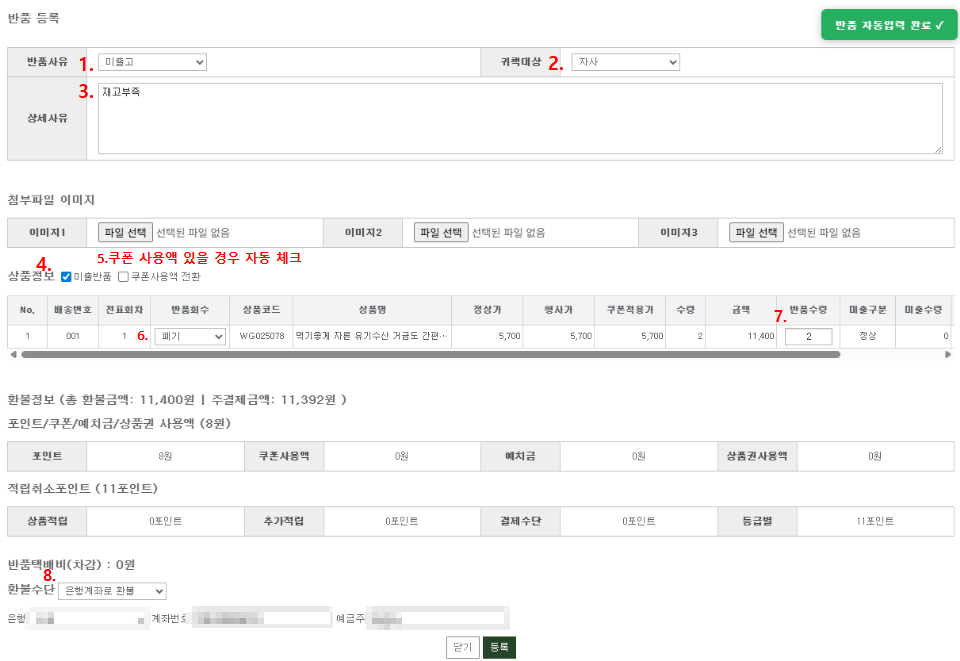
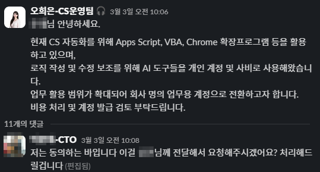

근거
1. 재배송 등록 자동입력 설계 (Chrome Extension)

재배송 등록 시 반복 입력하던 주요 항목 6개를 Alt+Shift+D 단축키 한 번으로 자동 입력되도록 설계했습니다. 귀책대상 등 케이스별 기준값을 함께 반영해 분류 오류를 줄였고, 마지막 등록은 직접 확인 후 진행하도록 남겼습니다.
2. 반품 등록 자동입력 설계

반품 등록 시 반복 입력하던 주요 항목 6개를 Alt+Shift+S 단축키로 자동 입력되도록 구성했습니다. 반복 입력 시간을 줄이는 동시에 기준값 오입력을 줄여 데이터 정합성을 높였습니다.
3. 생성형 AI 실무 도구화 및 조직 공식 승인

비개발자 환경에서도 생성형 AI를 로직 작성·수정·디버깅 보조에 실무적으로 활용했고, AI 도입의 필요성과 구체적 활용 방안을 경영진에게 제안해 비개발 직군 중 유일하게 관련 도구를 업무용 비용으로 공식 승인받았습니다.